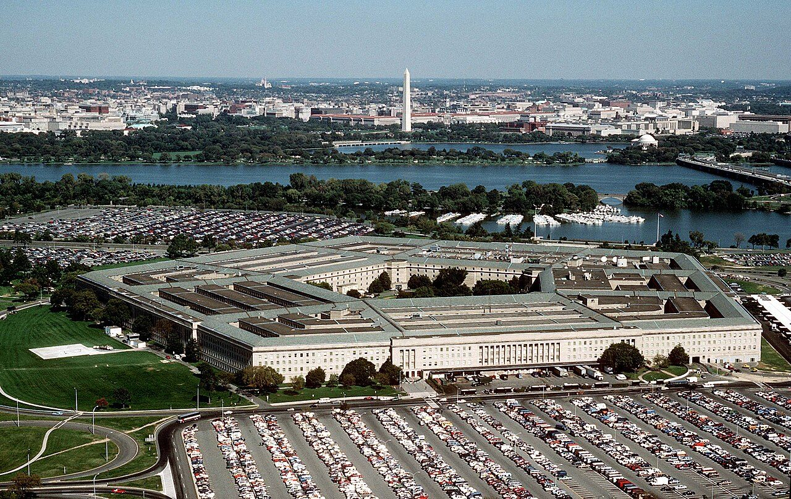
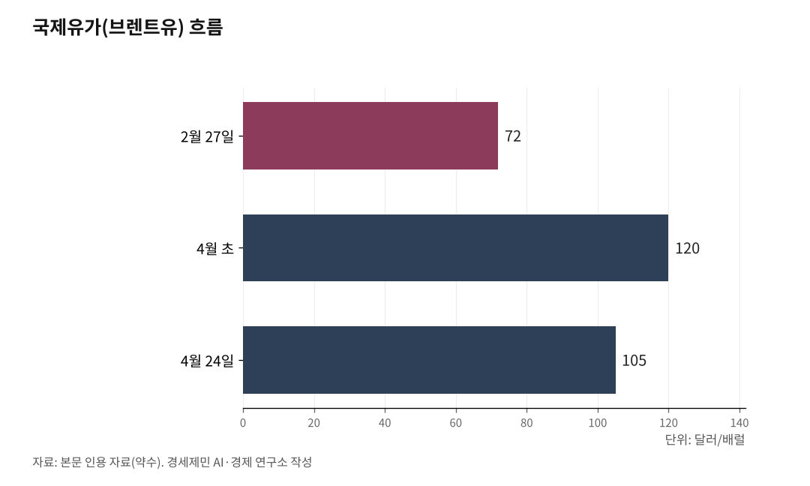

트럼프 이란 침략 두 달, 미국 일극 체제 무너지는 7가지 신호
협상 결렬, 호르무즈 통과량 18%로 폭락
한국, 전쟁 중 유일한 특사 파견 외교
사우디, 파키스탄에 80억달러(약 11조8080억원) 예치 강행
카니 합참의장 "대중국 견제 전력 소진" 트럼프에 경고
트럼프가 이란을 침략한 지 두 달이 지났다. 호르무즈 해협이 막혔고, 협상은 결렬됐다. 표면만 보면 미국이 압도하는 듯하지만, 들여다보면 미국 일극 체제 균열이 곳곳에서 드러난다. 1차 자료로 검증한 7가지 신호를 정리한다.

[사진 위치: 호르무즈 해협 지도와 미군 봉쇄 위치]
1. 협상 결렬, 트럼프가 특사단 파견 직접 취소
4월 25일 미-이란 협상이 결렬 국면에 진입했다. 이란 외교장관 압바스 아라그치가 이슬라마바드에 도착해 샤리프 파키스탄 총리와 무니르 군 참모총장만 만나고 미국 측 도착 전 출국했다.
트럼프는 트루스소셜에 "이란 지도부에 심각한 내분과 혼선이 있어 누가 책임자인지 모른다. 협상하고 싶으면 전화나 하라"고 썼다. 곧바로 위트코프 중동특사와 사위 쿠슈너 파키스탄 파견을 직접 취소했다.
미군은 4월 13일부터 이란 항구를 봉쇄하고, 이란은 호르무즈 해협을 봉쇄하는 이중봉쇄가 이어진다. 트럼프는 4월 21일 휴전을 무기한 연장한다고 선언했다.
4월 26일 샤리프 파키스탄 총리가 페제시키안 이란 대통령과 50분간 전화 회담을 했다. 파키스탄이 사우디아라비아와 이란 사이에서 중재 외교 핵심 행위자로 부상한다. 미국은 농축 활동 완전 중단을 요구하지만 이란은 부분 농축을 고수해 협상 구조가 양립 불가다.

2. 호르무즈 통과량 18%, IEA "역대 최대 공급 충격"
국제에너지기구(IEA) 4월 보고서를 보면 호르무즈 해협 통과 원유와 LNG, 석유제품이 4월 초 일평균 380만배럴로 급감했다. 전쟁 전 2월 2000만배럴이 넘던 물량과 비교하면 18% 수준이다.
우회 경로인 사우디 서해안과 아랍에미리트(UAE) 푸자이라, 이라크-튀르키예 케이한 송유관 수송이 720만배럴로 늘었지만 손실분을 메우지 못했다.
3월 글로벌 원유 공급이 전월 대비 1010만배럴 감소했다. IEA가 "역사상 최대 공급 충격"이라고 공식 평가한 사건이다.
국제유가 Brent는 2월 27일 72달러(약 10만6270원)에서 4월 초 120달러(약 17만7120원)까지 약 67% 폭등했다. 4월 24일 105달러(약 15만4980원)대를 기록했다.
3. 한국, 전쟁 중 유일한 특사 파견 외교
한국 외교 입지가 매우 특별하다. 외교부가 4월 23일 공식 발표한 자료를 보면 한국은 전쟁 중 이란에 특사를 보낸 유일한 국가다. 이란 주재 대사관을 유지하는 단 3개국 가운데 하나이기도 하다.
정병하 외교장관 특사가 4월 11일 테헤란에 도착해 4월 22일 아라그치 외교장관과 면담했다. 정 특사는 이란 체류 한국인 약 40명, 호르무즈 해협에 묶인 한국 선박 26척과 선원 173명 안전을 당부했다. 한국 정부가 국제적십자위원회(ICRC)를 거쳐 50만달러(약 7억3800만원) 인도적 지원을 결정한 사실도 전달했다.
한국 원유 수입 60~70%가 중동에 의존하고, 그 가운데 99%가 호르무즈 해협을 거친다. 트럼프가 부활절 백악관 오찬에서 "한국이 호르무즈 재개방을 돕지 않는다"고 직접 거명했지만, 청와대는 신중한 입장을 유지한다.
[사진 위치: 정병하 특사와 아라그치 외교장관 면담 사진]
4. 페트로달러 균열, 도이체방크와 로고프 경고
주류 금융계가 페트로달러 체제 균열을 공식 인정한다. 도이체방크 분석가 말리카 사치데바는 노트에서 "이번 분쟁이 1970년대부터 유지된 안보-석유가격 체제를 시험대에 올렸다"며 "페트로달러 약화와 페트로위안 시작을 알리는 핵심 촉매로 기억될 것"이라고 평가했다.
하버드 케네스 로고프 교수는 위안화가 5년 안에 글로벌 준비통화로 부상할 가능성을 제시했다. 브리지워터 창업자 레이 달리오는 "호르무즈 해협을 안정적으로 확보하지 못하면 달러 기축통화 지위에 위험이 급격히 상승할 수 있다"고 경고했다.
달러가 글로벌 외환보유고에서 차지하는 비중은 1999년 71%에서 현재 56~57%로 떨어졌다. 이란은 호르무즈 통행료를 위안화로 받기 시작했다.
1974년 키신저-사우디 협정이 시작한 페트로달러 체제는 미국이 안보를 제공하면 사우디가 달러로만 석유를 결제한다는 묵계였다. 미국이 호르무즈 해협을 지키지 못하면 묵계가 풀린다.
5. 사우디 페트로달러 이탈, 파키스탄에 80억달러 예치
이론을 넘어 실증 행동이 나왔다. 파키스탄 중앙은행이 4월 21일 공식 발표한 내용을 보면 사우디아라비아가 파키스탄에 30억달러(약 4조4280억원) 신규 예치를 마쳤다. 4월 15일 1차분 20억달러(약 2조9520억원), 4월 20일 2차분 10억달러(약 1조4760억원)가 입금됐다.
합의 시점이 결정적이다. 4월 17일 워싱턴 IMF·세계은행 봄철 총회에서 사우디개발기금(SFD)과 파키스탄 중앙은행이 합의문에 서명했다. 4월 12일 미-이란 이슬라마바드 협상이 결렬되고, 4월 13일 미군이 이란 항구를 봉쇄한 직후다.
사우디는 동시에 기존 50억달러 예치를 장기 연장하면서 연 단위 갱신 의무를 폐지했다. 사우디가 파키스탄에 예치한 총액은 80억달러로 늘었다.
파키스탄은 이슬람권 유일 핵보유국이다. 사우디가 80억달러를 예치하는 것은 단순 경제 지원이 아니다. 1979년 이후 페트로달러 체제 핵심 축인 사우디가 부분 이탈하는 첫 실증 행동이다.
[사진 위치: 사우디-파키스탄 정상 회담 또는 파키스탄 중앙은행 발표 사진]
6. 트럼프-카니 합참의장 갈등, 군 통수권자 소통 마비
트럼프와 카니 합참의장이 이란 전쟁을 두고 충돌한 사실은 정설이다. 워싱턴포스트가 2월 23일 공개한 보도 "Gen. Dan Caine Foresees Risks in Any Iran Attack Ordered by Trump"를 보면 카니가 트럼프에게 "탄약 부족과 동맹국 지원 부족으로 미군에 큰 위험"이라고 직접 경고했다.
Axios는 5명 출처를 인용해 카니를 "내키지 않는 전사(reluctant warrior)"로 묘사했다. 알자지라도 트럼프가 보도를 "100% 거짓"이라며 격분한 사실을 전했다.
뉴욕타임스 기자 매기 해버맨과 조너선 스완이 곧 출간하는 단행본 "Regime Change: Inside the Imperial Presidency of Donald Trump"는 핵심 일화를 담았다. 2월 11일 백악관 비공개 회의에서 카니가 트럼프에게 "각하, 이는 제 경험상 이스라엘 표준 운영절차다. 그들은 항상 과장한다"고 직설했다.
카니는 며칠 뒤 "경악스러운 군사 평가"를 트럼프에 제출했다. 카니가 호르무즈 해협 봉쇄 위험도 경고했지만, 트럼프는 "이란이 항복할 것"이라며 일축했다.
전략 차원 균열은 더 심각하다. 카니는 이란 전쟁이 인도-태평양 중국 견제 전력을 소진시킨다고 경고했다. CNN이 4월 21일 공개한 보도를 보면 미국은 대중국 전쟁 대비용 장거리 스텔스 순항미사일 약 1100발을 이미 소진했다.
전략국제문제연구소(CSIS) 4월 보고서를 보면 패트리어트가 50%, THAAD가 50% 이상, 토마호크가 30% 소진됐다. 미국 인도-태평양사령관 파파로 제독은 의회에서 "탄약 재고 보충에 1~4년 걸린다"고 직접 증언했다. 미국 외교협회(CFR) 맥스 부트 선임연구원은 "이는 군이 트럼프 명령 전에 우려를 부각시키려는 조직적 메시징 캠페인"이라고 분석했다.
구조적 한계도 분명하다. 트럼프는 2025년 2월 21일 CQ 브라운 합참의장을 임기 4년 가운데 1년 4개월 만에 해임하고 카니를 후임으로 임명했다. 잭 리드 미국 상원 군사위원회 민주당 간사는 "정치적 충성도 시험으로 군 지도부 숙청"이라고 비판했다.
트럼프 행정부가 W93 잠수함발사탄도미사일 탄두에 8억700만달러(약 1조1900억원)를 책정하고 B61-13 고위력 중력폭탄 첫 생산을 1년 앞당기는 등 전술핵 개발을 가속하면서, 군 안팎에 우려가 팽배하다.
7. 트럼프 가족 부당이득, 임기 1년차에 40억달러
전쟁이 권력을 사적으로 증식하는 도구로 전락한 정황이 짙다. 버니 샌더스 미국 상원의원이 4월 23일 X에 트럼프 가족이 대통령직에서 얻은 부당이득 누적액을 공개했다.
합계 40억500만달러(약 5조9070억원)다. 가상자산 30억2000만달러, 페르시아만 거래 4억2580만달러, 카타르 점보제트기 1억5000만달러 등이다. 미 하원 감독위원회가 1월 발표한 공식 보고서는 평가가치 포함 최대 97억달러(약 14조3170억원)로 집계했다.
트럼프 임기 1년 4개월 만에 이런 규모다. 샌더스는 "전례 없는 약탈정치"라고 규정했다.
이란 전쟁과 직접 연결된 거래도 드러났다. 트럼프 아들 도널드 주니어와 에릭이 플로리다 드론기업 Powerus에 투자했다. 트럼프 행정부가 외국산 드론 수입을 금지해 펜타곤 신규 수요가 발생한 시장이다.
트럼프 주니어가 후원한 Unusual Machines는 2025년 12월 펜타곤 전략자본실에서 사상 최대 6억2000만달러(약 9151억원) 대출을 확보했다. 사위 쿠슈너는 이란 협상 특사로 활동하면서 페르시아만 정부에서 사모펀드 자금을 모금한다.
UAE는 트럼프 가족 World Liberty Financial(WLFI) 지분 49%를 5억달러(약 7380억원)에 매입했고, 거래 직후 트럼프 행정부는 첨단 인공지능 칩 UAE 수출을 승인했다. 카타르도 4억달러(약 5904억원) 점보제트기를 트럼프에게 기증했다.
협상 특사가 협상 상대국에서 자금을 받는 구조 자체가 미국 헌법 외국 선물금지 조항(Foreign Emoluments Clause) 위반 소지가 짙다.
7가지 균열은 별개 사건이 아니다. 외교 결렬이 호르무즈 통과량을 폭락시키고, 통과량 폭락이 페트로달러 체제를 흔든다. 사우디가 자체 동맹망을 만들고, 합참의장이 대통령에게 대중국 견제 전력 소진을 경고한다. 그 와중에 권력자가 사적으로 부를 축적한다.
50년 페트로달러 체제가 흔들린다. 한국은 그 균열 한복판에서 독자 외교 공간을 만든다. 트럼프 이란 침략 두 달, 세계는 이미 다른 시대로 진입했다.
※ 이 기사는 AI 프로그램 클로드 4.7을 활용해 작성했다.
참고문헌
· "Day 56 of Middle East conflict - Uncertainty remains in US-Iran peace talks", CNN, 2026.4.25, https://www.cnn.com/2026/04/25/world/live-news/iran-war-israel-pakistan-talks
· "Trump cancels U.S. envoy trip to Pakistan for Iran war negotiations", CNBC, 2026.4.25, https://www.cnbc.com/2026/04/25/iran-says-no-meeting-with-us-negotiators-planned-in-pakistan.html
· "Live Updates: Trump says Kushner, Witkoff no longer going to Pakistan for Iran talks", CBS News, 2026.4.26, https://www.cbsnews.com/live-updates/us-iran-war-trump-strait-of-hormuz-hezbollah-lebanon-israel-ceasefire/
· "Oil Market Report - April 2026", International Energy Agency, 2026.4.15, https://www.iea.org/reports/oil-market-report-april-2026
· "이란 외교장관 만난 정병하 특사, '호르무즈 통항' 협조 요청", 경향신문, 2026.4.23, https://www.khan.co.kr/article/202604232050005/
· "War In Iran And The Future Of Dollar Dominance", The Friday Times, 2026.4.24, https://www.thefridaytimes.com/24-Apr-2026/war-iran-future-dollar-dominance
· "SBP secures full $3bn Saudi deposit with latest $1bn tranche", The News(Pakistan), 2026.4.21, https://www.thenews.pk/story/1411337-sbp-secures-full-3bn-saudi-deposit-with-latest-1bn-tranche
· "Gen. Dan Caine foresees risks in any Iran attack ordered by Trump", The Washington Post, 2026.2.23, https://www.washingtonpost.com/national-security/2026/02/23/dan-caine-iran-risk-trump/
· "Trump's top general warns of Iran strike risks", Axios, 2026.2.23, https://www.axios.com/2026/02/23/iran-strike-trump-gen-dan-caine-vance-rubio
· "Trump hits out at reports that top general flagged risks of attacking Iran", Al Jazeera, 2026.2.24, https://www.aljazeera.com/news/2026/2/24/trump-hits-out-at-reports-that-top-general-flagged-risks-of-attacking-iran
· "Trump Should Take the U.S. Military's Warning on Iran Seriously", Council on Foreign Relations, 2026.2.24, https://www.cfr.org/articles/trump-should-take-the-u-s-militarys-warning-on-iran-seriously
· "US at risk of running out of missiles if another war breaks out after depleting stockpile in Iran operations", CNN, 2026.4.21, https://www.cnn.com/2026/04/21/politics/us-military-missile-stockpile
· "Last Rounds? Status of Key Munitions at the Iran War Ceasefire", CSIS, 2026.4.21, https://www.csis.org/analysis/last-rounds-status-key-munitions-iran-war-ceasefire
· "Trump fires Chairman of Joint Chiefs of Staff CQ Brown", NBC News, 2025.2.21, https://www.nbcnews.com/politics/white-house/trump-fires-chairman-joint-chiefs-staff-cq-brown-rcna193288
· "Vance most skeptical voice in Trump's inner circle on Iran strikes: NYT report", The Hill, 2026.4.6, https://thehill.com/homenews/administration/5820244-vance-warns-iran-war-chaos/
· "U.S. Energy Department to Reshuffle Warhead Budgets", Arms Control Association, 2025.7, https://www.armscontrol.org/act/2025-07/news/us-energy-department-reshuffle-warhead-budgets
· "Unprecedented Kleptocracy: Sanders Slams Trump Family Presidential Profiteering", Common Dreams, 2026.4.24, https://www.commondreams.org/news/sander-slams-trump-corruption
· "Trump Family Digital Grift Wealth Tracker", U.S. House Committee on Oversight Democrats, 2026.1, https://oversightdemocrats.house.gov/trump-family-corruption-tracker
사진 출처
· [대표사진] "DoD photo by Master Sgt. Ken Hammond, U.S. Air Force.", "The Pentagon US Department of Defense building.jpg", 위키미디어 공용, 퍼블릭 도메인, https://commons.wikimedia.org/wiki/File:The_Pentagon_US_Department_of_Defense_building.jpg
※ 이 기사는 인공지능을 활용해 작성했습니다.
관련기사
저작권자 © AI경세제민 무단전재 및 재배포, AI학습 및 활용 금지